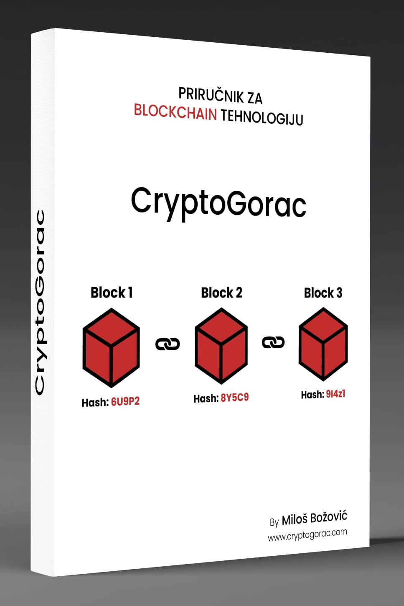

Blockchain tehnologija
Blockchain tehnologija
Priručnike možete naručiti odmah putem društvenih mreža.
Blockchain tehnologija
Šta je Blockchain? Blockchain je distribuirana, decentralizovana baza podataka koja omogućava sigurnu, transparentnu i nepromenjivu evidenciju podataka. Osnovna struktura blockchain tehnologije sastoji se od lanaca blokova, pri čemu svaki blok sadrži niz transakcija ili podataka, kao i jedinstveni identifikator (hash) prethodnog bloka. Ova povezanost između blokova stvara lanac koji je otporan na izmene i prevare. Ključni elementi blockchaina: 1. Decentralizacija: o Umesto da se podaci čuvaju na jednom centralizovanom serveru, blockchain se širi kroz mrežu računara (node-ova) koji su povezani međusobno. Svaki čvor u mreži ima kopiju celog lanca blokova, što povećava otpornost na napade i greške. 2. Transparentnost: o Sve transakcije na blockchain mreži su javne i dostupne svima. Ova transparentnost omogućava korisnicima da proveravaju i verifikuju transakcije, čime se smanjuje mogućnost prevare. 3. Sigurnost: o Koristeći kriptografske tehnike, poput hash funkcija, blockchain osigurava integritet podataka. Svaki blok sadrži hash prethodnog bloka, što znači da bi bilo koja promena u prethodnim podacima zahtevala promenu svih narednih blokova, što je gotovo nemoguće bez saglasnosti mreže. 4. Nepromenjivost: o Kada su podaci jednom zapisani u blockchain, oni se ne mogu jednostavno menjati ili brisati. Ova karakteristika je ključna za primene koje zahtevaju visoku razinu poverenja, poput finansijskih transakcija, ugovora ili evidencija. Princip rada: Kada korisnik želi da izvrši transakciju (npr. prenese kriptovalutu), ta transakcija se šalje mreži. Čvorovi u mreži proveravaju i validiraju transakciju koristeći konsenzusne algoritme. Kada se transakcija potvrdi, ona se grupiše sa drugim transakcijama u blok. Nakon što je blok popunjen, on se dodaje na kraj lanca, a proces započinje iznova.
Vrste BLOCKCHAIN mreže
3.1. Javni (Public) blockchain
Javni blockchain je otvorena mreža dostupna svima. Svako može učestvovati u mreži, validirati transakcije i dodavati nove blokove.
Prednosti:
Decentralizacija: Nema centralne tačke kontrole, što povećava sigurnost i otpornost na napade.
Transparentnost: Sve transakcije su javno dostupne i mogu se proveriti od strane bilo koga.
Sigurnost: Veliki broj učesnika čini mrežu sigurnijom protiv napada.
Mane:
Skalabilnost: Javni blockchainovi često imaju problema sa skalabilnošću zbog velikog broja transakcija.
Energetska potrošnja: Konsenzusni algoritmi kao što je Proof of Work (PoW) zahtevaju veliku količinu energije.
Privatnost: Sve transakcije su javne, što može biti problem za korisnike koji žele privatnost.
3.2. Privatni (Private) blockchain
Privatni blockchain je mreža sa ograničenim pristupom, gde samo odabrani učesnici mogu validirati transakcije i dodavati blokove.
Upotreba u korporativnim okruženjima:
Kontrola pristupa: Samo ovlašćeni učesnici mogu pristupiti mreži, što omogućava veću kontrolu nad podacima.
Brže transakcije: Manji broj učesnika omogućava brže validacije i transakcije3.
Privatnost: Podaci su dostupni samo ovlašćenim učesnicima, što povećava privatnost.
3.3. Dozvoljeni (Permissioned) blockchain
Dozvoljeni blockchain kombinuje karakteristike javnih i privatnih blockchainova. Pristup mreži je ograničen, ali transakcije mogu biti javno dostupne.
Kombinacija privatnog i javnog pristupa:
Fleksibilnost: Omogućava kontrolu pristupa uz zadržavanje transparentnosti za određene transakcije.
Sigurnost: Kombinacija privatnog pristupa i javne verifikacije povećava sigurnost.
Efikasnost: Brže transakcije uz mogućnost javne provere.
3.4. Konsorcijumski blockchain
Konsorcijumski blockchain je mreža koju upravlja grupa organizacija. Ova vrsta blockchaina se često koristi u industrijskim partnerstvima.
Upotreba u partnerstvima i industrijama:
Zajednička kontrola: Više organizacija upravlja mrežom, što povećava poverenje među partnerima.
Smanjenje troškova: Deljenje resursa i infrastrukture smanjuje troškove.
Specifične primene: Idealno za industrije gde je potrebna saradnja između više entiteta, kao što su finansije, zdravstvo i logistika…
Kriptografija
Kriptografija u blockchainu
Uloga kriptografskih ključeva
Kriptografija zauzima centralno mesto u blockchain ekosistemu, obezbeđujući osnovne sigurnosne mehanizme za zaštitu podataka, verifikaciju transakcija i održavanje integriteta sistema. Kriptografski ključevi su srce ove sigurnosne strukture.
• Definicija i funkcija ključeva: Kriptografski ključevi su matematički algoritmi koji se koriste za šifrovanje i dešifrovanje podataka. Postoji dva vrsta ključeva u sistemu asimetrične kriptografije, koja je dominantna u blockchain tehnologiji:
o Javni ključ (Public Key): Ovo je segment digitalnog identiteta koji je dostupan svima. Njegova funkcija je dvoje:
Šifrovanje: Kada neko šalje poruku ili transferira sredstva, koristi javni ključ za šifrovanje ovih informacija. Pošto javni ključ može da bude slobodno distribuiran, bilo ko može da pošalje šifrovane podatke koji mogu biti dešifrovani samo od strane vlasnika odgovarajućeg privatnog ključa.
Verifikacija: Javni ključ se koristi za proveru digitalnih potpisa, omogućavajući učesnicima da verifikuju da je poruka ili transakcija stvarno poslata od određenog pojedinca ili entiteta, bez mogućnosti falsifikovanja.
o Privatni ključ (Private Key): Privatni ključ je tajna komponenta kriptografskog para. Njegove funkcije su:
Dešifrovanje: Ovaj ključ se koristi za dešifrovanje poruka ili transakcija koje su bile šifrovane javnim ključem. Privatni ključ mora ostati privat da bi sistem sačuvao svoju sigurnost; izgubljen ili otkriven ključ može dovesti do gubitka kontrola nad digitalnim aktivima.
Digitalno potpisivanje: Kada se privatni ključ koristi za potpisivanje transakcije ili poruke, on stvara digitalni potpis koji može biti verificiran javnim ključem. Ovo obezbeđuje da samo vlasnik privatnog ključa može autorizovati transakciju ili potvrditi informaciju.
• Kako funkcioniše par ključeva?: Asimetrična kriptografija radi na principu funkcionalnosti parova javni-privatni ključ.
o Matematički osnovano: Ova tehnologija se oslanja na komplikovanim matematičkim problemima, kao što je faktorizacija velikih brojeva u slučaju RSA algoritma, ili eliptične krivine u ECIES. Teorija je da je šifrovanje i dešifrovanje brzo, ali izvođenje obrnutog procesa (odnosno pronalaženje privatnog ključa iz javnog) zahteva ekstremno dugo vreme i računarske resurse, čineći sistem praktično neprobojnim.
o Sigurnost: Sigurnost sistema leži u tajnosti privatnog ključa. Svaka transakcija ili poruka šifrovana javnim ključem može biti dešifrovana samo odgovarajućim privatnim ključem, čime se obezbeđuje da samo odgovarajući vlasnik može pristupiti ili autorizovati akcije.
• Uticaj na blockchain: U blockchain ekosistemu, kriptografija kroz ključeve obezbeđuje:
o Integritet podataka: Svaka promena u transakciji biht biti vidljiva zbog digitalnog potpisa.
o Autentifikacija: Verifikacija identiteta onih koji šalju transakcije.
Konfidencijalnost: Šifrovanjem osigura da samo namenjeni primaoci mogu dešifrovati i čitati sadržaj poruke ili detalje transakcije. Ovo je posebno važno za privatnost transakcija na javnim blockchain mrežama gde svi mogu videti transakcije, ali samo oni s odgovarajućim privatnim ključem mogu da ih dešifruju i razumeju.
5.2. Rizici i izazovi
Blockchain tehnologija, unatoč svojoj robustnosti i sigurnosti, suočava se sa nekoliko rizika i izazova koji mogu uticati na integritet, sigurnost i efikasnost sistema.
Hakerski napadi
• 51% Napad: Ovo je teorijski napad gde, ako jedan entitet kontrolira većinu računske snage (51%) u mreži, on može manipulirati transakcijama, sprečavati nove transakcije da se potvrde, ili čak obrnuti transakcije. U praksi, ovo je veoma teško izvesti zbog decentralizovane prirode mnogih blockchain mreža, posebno onih sa velikim brojem učesnika.
o Rizik: U manje decentralizovanim mrežama ili novim kriptovalutama, rizik od ovog napada može biti veći.
• Sybil Napad: U ovoj vrsti napada, napadač stvara mnogo lažnih identiteta (nodova) u mreži da bi imao veću kontrolu ili da zabušava mrežu.
o Rizik: Posebno efektivan u nekim sistemima za konsensus gde glas ili moć nodova zavisi od njihovog broja.
• Različiti napadi na konsensus protokole: Postoje i druge vrste napada kao što su Double-spending (dvostruko trošenje), Eclipse Attack (gde napadač izoluje žrtvu od ostatka mreže), itd.
Ranjivosti pametnih ugovora
Pametni ugovori su automatski izvršavajući programi na blockchainu. Međutim, oni mogu biti ranjivi na:
• Kodiranje grešaka: Programerske greške mogu voditi ka eksploatacijama gde napadač može iskoristiti kodiranje greške da izvrši transakcije koje nisu bile namerno omogućene.
• Reentrancy: Posebna vrsta napada gde funkcija poziva samu sebe pre nego što se završi, što može dovesti do gubitka sredstava.
• Front-running: U ovom napadu, napadač koristi informacije o transakciji pre nego što se ona izvrši da bi zaradio profit na račun originalnog pokretača transakcije.
• Timestamp Dependency: Ako pametni ugovor zavisi od vremenskog pečata, napadač može koristiti varijaciju vremena između nodova da manipuliše sistemom.
Zaštite i strategije:
• Auditi koda: Regularni auditi programa su ključni za otkrivanje grešaka, ranjivosti, i mogućih eksploatacija u pametnim ugovorima ili blockchain softveru.
o Redovni pregledi: Implementacija redovnih pregleda koda je bitna za identifikaciju i popravku grešaka pre nego što one dovedu do eksploatacija ili gubitka sredstava. Ovo uključuje:
Reviziju koda: Timovi stručnjaka ili vanjski auditori pregledaju kod za potencijalne greške, sigurnosne pukotine, ili neefikasnosti.
Automatski alati: Korišćenje alata za statičku analizu koda koji mogu prepoznati poznate obrasce grešaka ili bezbednosne ranjivosti.
Testiranje penetracije: Simuliranje napada na sistem da bi se proverila njegova otpornost na realne ugroze.
o Fokus na kritične komponente: Posebna pažnja se posvećuje pametnim ugovorima zbog njihove centralne uloge u automatizaciji transakcija na blockchainu.
• Edukacija i svest o sigurnosti: Osim tehničkih mera, važno je da se svi učesnici u blockchain ekosistemu obrazuju o sigurnosnim praksama.
o Treninzi i seminari: Redovne edukativne sesije za developере, korisnike i menadžere o najnovijim pretnjama i metodama zaštite.
o Protokoli za odgovor na incident: Definisanje jasnih koraka za identifikaciju, izolaciju, i reakciju na potencijalne sigurnosne incidente.
• Dekentralizacija i konsensus protokoli:
o Razvoj otpornih protokola: Implementacija konsensus protokola koji su otporni na većinu poznatih napada (npr. Proof of Stake (PoS) koji smanjuje rizik 51% napada u odnosu na Proof of Work (PoW)).
o Dekentralizacija moći: Održavanje decentralizovane strukture blockchain mreže kroz podsticanje čvorova širom sveta kako bi se smanjila mogućnost centralizacije moći.
• Povećanje privatnosti i anonimnosti:
o Tehnologije kao što su Zero-Knowledge Proofs (ZKP): Omogućuju potvrđivanje transakcija bez otkrivanja detalja o tim transakcijama, čime se povećava privatnost.
o Privatne blockchain mreže: Za određene slučajeve upotrebe, privatne ili hibridne blockchain mreže mogu pružiti dodatnu kontrolu nad podacima i pristupom.
Svaka od navedenih strategija za zaštitu od rizika i izazova u blockchainu predstavlja sloj odbrane, osiguravajući da tehnologija ostaje sigurna, pouzdana i efikasna za sve učesike.
Ovo su neki od dijelova iz našeg priručnika za Blockchain tehnologija od autora:
Miloš Božović CEO cryptogorac.com .